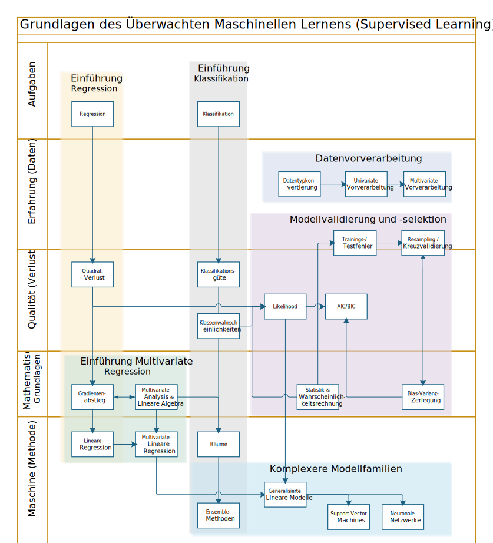

- Einführung & Allgemeines
- Einführung in R
- Statistische Datenanalyse
- Maschinelles Lernen
- Zeitreihenanalyse
- Portfolioanalyse und -optimierung
Einführung & Allgemeines
- Prof. Dr. Rainer Stollhoff: rainer.stollhoff@th-wildau.de
- Felix Rothe: felix.rothe@th-wildau.de
-
Organisation der Kursinhalte Textseite
Die Inhalte dieses Moodle-Kurses setzen sich aus theoretischen Lerneinheiten in Form von Präsentationen (Videos und Foliensätzen) und praktischen, interaktiven Tutorials zusammen.
Behandelt werden dabei die Themen:
- Grundlagen der R Programmierung,
- Statistische Analyse mit R
- Datenmanagement mit R
- Datenvisualisierung mit R
- Explorative Datenanalyse mit R
- Maschinelles Lernen (mit R)
- Zeitreihenanalyse (inkl. Portfolioanalyse) (mit R)
In den theoretische Lerneinheiten werden die Methoden und Verfahren Umsetzungsunabhängig auf (mathematischer) Ebene diskutiert. Dies geschieht in Form von Videovorlesungen, zu welchen die Foliensätze bereitgestellt werden. Die kommentierten Foliensätze enthalten Anmerkungen und Zeichnungen aus den Vorlesungen.
Hinweis: Bitte beachten Sie, dass in den Videos vereinzelt kleinere Fehler enthalten sein können. Diese sind soweit bekannt bei den Videoaufzeichnungen angegeben und in den Foliensätzen bereits korrigiert. Aktualisierte Versionen der Videos werden langfristig folgen.
Die praktischen Tutorials vermitteln die Anwendung der behandelten Verfahren. Diese sind mit R verfasst und werden auf einem Server an der TH Wildau gehostet. Um diese Inhalte zu verwenden, müssen Sie direkt (LAN/WLAN) oder per VPN (Cisco) mit dem Hochschulnetz verbunden sein.
Die Tutorials enthalten Texte und beispielhafte R Kommandos zu den Themen "Grundlagen der R Programmierung", "Statistische Analyse mit R", "Explorative Datenanalyse mit R", "Maschinelles Lernen mit R" und "Zeitreihenanalyse mit R (inkl. Portfolioanalyse)" - immer wieder unterbrochen durch kleine Programmierübungen in R, in denen Sie das Erlernte direkt anwenden können.
Der Zugriff auf die eigene R-Installation ist für Applets und Tutorials nicht zwingend notwendig, sodass sich diese auch mobil abrufen oder bearbeiten lassen. Allerdings lässt Ihnen die gleichzeitige Verwendung einer eigenen R-Installation mehr Freiheitsgrade z.B. um die Hilfsfunktion zu verwenden oder einzelne Befehle / Übungen dauerhaft abzuspeichern. Für die Bearbeitung der Übungen im Anwendungsbereich ist eine eigene R-Installation (bzw. der Zugriff auf den R-Server) ohnehin zwingend notwendig.
Darüber hinaus stehen Ihnen eine Auswahl ergänzender Unterlagen zur Verfügung. Bei den ergänzenden Unterlagen handelt es sich um
- Links zu Lehrbüchern (insb. theoretische Grundlagen)
- Links zu Tutorials, Webseiten etc. zum Themengebiet, die eine alternative Darstellung der Inhalte bieten.
Hinweis: Die Zitierungen aller Literaturquellen und R-Pakete ist noch nicht vollständig abgeschlossen und befindet sich aktuell in Bearbeitung.
Ziele & Motivation des Kurses
Dieser offene Moodle-Kurs soll eine Einführung in die Datenanalyse mit der Programmiersprache R bieten. Dabei werden theoretische Kenntnisse über die Methoden, sowie auch praktische Kenntnisse über deren Anwendung vermittelt.
Der Kurs richtet sich an alle, die grundlegende Kenntnisse auf dem Gebiete der Datenanalyse, im Speziellen in den Bereichen Zeitreihenanalyse (mit Fokus auf den Finanzbereich) und Maschinelles Lernen erwerben wollen und ist nicht auf eine spezielle Fachrichtung bzw. auf einen bestimmten Studiengang ausgerichtet.
Für die theoretischen Inhalte werden mathematische Basiskenntnisse vorausgesetzt, wie sie im natur-, ingenieurs- oder wirtschaftswissenschaftlichen Grundstudium vermittelt werden (lineare Algebra, Analysis, Stochastik, Statistik). Die wichtigsten Grundkenntnisse werden teilweise an den benötigten Stellen im Schnelldurchlauf rekapituliert oder extra in Form von kurzen Zusammenfassungen bereitgestellt.
Der Kurs stellt eine grundlegende Einführung in den Umgang mit R bereit, so dass dem Teilnehmer ausreichende Kenntnisse vermitteln werden, um den praktischen Kursinhalten folgen zu können. Programmier(vor)kenntnisse sind somit nicht von Nöten, jedoch hilfreich, um die praktischen Kursinhalte in der Tiefe besser verstehen zu können.
Der Kurs stellt eine hochschulöffentliche Variante der Lehrveranstaltungen "Quantitative Methoden" und "Maschinelles Lernen" von Prof. Dr. Rainer Stollhoff dar und soll langfristig als OER (Open Educational Resource) der allgemeinen Öffentlichkeit verfügbar gemacht werden. Hinweise, Anregungen und Fehlerberichte sind ausdrücklich erwünscht. Nutzen Sie dafür bitte die entsprechenden Foren am Ende dieses Tabs oder wenden Sie sich direkt an die Administratoren:
Einführung in R
In diesem Abschnitt werden grundlegende Kenntnisse in der R-Programmierung inklusive Datenmanagement und -Visualisierung vermittelt.
-
Das interaktive Tutorial vermittelt die Grundlagen von R:
- Allgemeines zu R
- Rechnen mit R
- Variablen in R
- Rechnen mit Variablen
- Vektorartige Variablen
- Mehrdimensionale Variablen
-
 Einfache Graphiken mit R (base)
Einfache Graphiken mit R (base)Eine interaktive Einführung in die Erstellung einfacher Graphiken mit Basisfunktionen:
- Allgemeines
- High-Level-Plots
- Low-Level-Plots
- Layout und Ausgabe
-
Eine interaktive Einführung in das Datenmanagement mit R
- Allgemeines
- Date(ie)n einlesen
- Kontrolle und Nachbearbeitung
- Daten speichern
-
Eine interaktive Einführung in die Grundlagen der Programmierung mit R:
- Allgemeines
- Fallunterscheidungen (if...else)
- Schleifen (for, while)
- Funktionen erstellen
-
Externe
Datenquellen nutzen mit R
Eine interaktive Einführung in das Einbinden externer Datenquellen in R
- Übersicht
- Datentyp xts
- Allgemeines zu Finanzdaten
- Das R Paket quantmod - Aktienkurse von finance.yahoo.com anrufen
- Das Portal quandl.com und das R Paket Quandl - vielfältige Finanzdaten abrufen
- Weitere Pakete
-
Erweitertes
Datenmanagent im
tidyverse von R Link/URL
Eine interaktive Einführung in das Datenmanagement mit den tidyverse Paketen
- Allgemeines
- Dat(ei)en einlesen mit readr
- Tidy data
- Daten verwalten mit dplyr
- Daten transformieren mit dplyr
- Verketten von Datenoperationen
- Daten speichern
-
Foliensatz zu Erweitertes Datenmanagement (tidy) als Zusammenfassung Datei
-
Erweiterte
Graphiken mit ggplot2
Link/URL
Eine interaktive Einführung in die Erstellung von Graphiken mit dem Paket ggplot2
- Allgemeines
- Einfache Diagramme
- Statistische Darstellungen
- Kombination von Graphiken
- Beschriftungen
- Skalierung und Maßstäbe
- Graphiken Speichern
-
Dokumentation und Kommunikation von Ergebnissen mit R Markdown
Eine Einführung in die Verwendung von R Markdown. Durch R Markdown lassen sich Analysen mit R und Textbausteine miteinander verknüpfen und in verschiedene Ausgabeformate konvertieren z.B. HTML-Seiten, Word-Dokument oder interaktive R Tutorials.
- Allgemeines
- R Markdown Syntax
- Erstellen von Ausgabedokumenten
Die Lerninhalte werden als HTML-Seite bereit gestellt - erzeugt aus einem R Markdown Dokument. Zusätzlich finden Sie untenstehend neben dem Original R Markdown Dokument auch Ausgaben in verschiedene Datei-/Dokumentformate. Die verschiedenen Ausgabeformate wurden dabei automatisch erstellt.
-
-
Ausgabeformate für R Markdown Dokumente
Verzeichnis herunterladen
-
-
Tutorial zur Installation von R und R Studio Link/URL
Ein interaktives, englischsprachiges Tutorial zur Installation von R und R Studio.
-
Deutschsprachige Einführung in R für EinsteigerInnen Link/URL
Die Einführung ist geschrieben für Studierende in Psychologie und Public Health an der Uni Bremen. Sie richtet sich an Einsteigerinnen und Einsteiger, ist gut verständlich geschrieben und leicht zugänglich. Der Fokus liegt allerdings auf klassischer statistischer Analyse und weniger auf Zeitreihenanalyse. Die ersten paar Abschnitte laufen daher noch parallel zu diesem Modul, spätere Abschnitte behandeln allerdings andere Themen bzw. Schwerpunkte.
-
Sammlung von Befehlsübersichten (cheatsheets) Link/URL
Umfassende Sammlung von Befehlsübersichten zu einzelnen Themengebieten bzw. Paketen.
Basisfunktionen
Erweiterungen
Ergänzende Materialien/Links/...
Statistische Datenanalyse
In diesem Abschnitt werden die Grundlagen der statistischen Datenanalyse und -Exploration mit R behandelt.
-
Grundlegende Theorie (alle Bereiche): Wahrscheinlichkeitsrechnung und Statistik
Eine kurze Zusammenstellung von Grundlagenkenntnissen in Wahrscheinlichkeitsrechnung und Statistik, wie sie im Rahmen einer Schulausbildung bzw. eines Bachelorstudiums für gewöhnlich vermittelt werden:
- Rechnen mit Wahrscheinlichkeiten
- Zufallsvariable, Wahrscheinlichkeitsverteilung
- Lage- und Streuungsparameter: Mittelwert, Varianz, Standardabweichung
- Zusammenhang: Kovarianz und Korrelation
- Lineare Regression: Trendlinie, kleinste-Quadrate-Methode, erklärte Varianz
Die Lineare Regression wird im Bereich Grundlagen Maschinelles Lernen noch detaillierter erläutert. Für die weiteren Inhalte wird vorausgesetzt, dass Sie die oben genannten Begrifflichkeiten und Konzepte kennen und verstanden haben.
-
Eine interaktive Einführung in das Rechnen mit Zufallsvariablen und die Simulation von (Pseude-)Zufallszahlen
- Zufallsbegriff
- Einfache Zufallsprozesse
- Diskrete Zufallsvariablen
- Stetige Zufallsvariablen
-
Eine interaktive Einführung in die Berechnung von deskriptiver Statistik mit R
- Allgemeines
- Univariate Statistiken
- Bivariate Statistiken
-
Übersicht
Die Lerneinheit explorative Datenanalyse mit R umfasst die Teilpakete
- Explorative Datenanalyse - Theorie und Demonstration
- Erweitertes Datenmanagement
- Erweiterte Graphiken (Visualisierung)
- Kommunikation von Datenanalysen
Diese ergänzen sich im Kontext der Datenanalyse wie folgt:
Der noch fehlende Teilaspekt Modellbildung wird in den folgenden Lerneinheiten behandelt.
Die Inhalte verwenden die Pakete aus dem tidyverse und ggplot.
-
Explorative Datenanalyse - Theorie und Demonstration Datei
Eine Einführung in Ziele und Verfahren mit Demonstration in R am Beispieldatensatz mpg
-
Beschreibung des Datensatzes
-
Werteverteilung einzelner Variablen (univariate Analyse)
- Zusammenhänge zwischen zwei und mehr Variablen (bivariate bzw. multivariate Analyse)
-
-
Explorative Datenanalyse - Theorie und Demonstration als Video
-
Demoskript explorative Datenanalyse mit R Datei
Das zur Durchführung einer explorativen Datenanalyse mit tidyverse Paketen und ggplot2 anhand des Datensatzes mpg verwendete R-Skript.
-
Demonstration: Explorative Datenanalyse zur Bundestagswahl 2017 Datei
Demonstration einer explorativen Datenanalyse am Beispiel der Bundestagswahl 2017
- Datenmanagement
- explorative Datenanalyse
Die Ergebnisse werden als .html Notebook dargestellt. Zusätzlich finden Sie auch das zu Grunde liegende R Markdown Dokument.
Grundlagen und Basisfunktionen
Voraussetzung sind Kenntnisse in den Basisfunktionen von R.
Explorative Datenanalyse
Voraussetzung sind Kenntnisse in den Basisfunktionen von R und den Erweiterungen Datenmanagement (tidy) und Graphiken (ggplot)
Ergänzende Materialien/Links/...
Maschinelles Lernen
Dieser Abschnitt gibt eine Einführung in das Maschinelle Lernen (mit R). Der Fokus liegt auf dem Supervised Learning.
Die theoretischen Inhalte lassen sich ohne Programmierkenntnisse in R bearbeiten.
Für die Demonstration mit R sind Kenntnisse in den Basisfunktionen von R sowie den Erweiterungen Datenmanagement (tidy) und Graphiken (ggplot) hilfreich.
-
Die Lerneinheit Einführung in Supervised Learning umfasst die Teilpakete
- Einführung Regression (inkl. Gradientenabstieg)
- Einführung Multivariate Regression
- Einführung Klassifikation
- Datenvorverarbeitung
- Modellvalidierung und -selektion
- Komplexere Modellfamilien
Diese ergänzen sich wie folgt:

-
(Wiederholung/Exkurs) Wahrscheinlichkeitsrechnung und Statistik
-
(Wiederholung/Exkurs) Multivariate Analysis und Lineare Algebra
Eine Wiederholung bzw. ein Schnelldurchlauf durch
- Funktionen mehrerer Veränderlicher
- Partielle Ableitungen 1. und 2. Ordnung
- Lineare Algebra (Vektoren, Matrizen, einfache Operationen, Inverse, Determinante)
Entscheidend ist das Verständnis der Konzepte. Eigenständiges Berechnen z.B. der Ableitungen ist nicht notwendig.
-
-
Einführung Regression inkl.Gradientenabstieg
- Regressionsaufgabe
- Einfache Lineare Regression y = a * x
- Analytische Lösung und Gradientenabstieg
-
-
Einführung Regression inkl.Gradientenabstieg - kommentiert Datei
-
Einführung Multivariate Regression Datei
Eine schrittweise Erweiterung der univariaten, einfachen linearen Regression und des Gradientenabstiegs auf
- bivariate lineare Regression
- multivariate lineare Regression
- multivariate Regression
-
-
Einführung Klassifikation Datei
Eine Einführung in Klassfikationsaufgaben
- Aufgabenstellung und unterschiedliche Maße für die Klassifikationsgüte (Beispiel Covid-19 Test)
- Klassifikationsbäume und Klassifikation anhand von Klassenwahrscheinlichkeiten
- Ensemble-Verfahren und Unterschiede in der Schätzung von Klassenwahrscheinlichkeiten
-
-
-
<
-
Komplexere Modellfamilien Datei
EIne Einführung in die theoretischen Grundlagen komplexerer Modellfamilien
- Teil 1:
- Wiederholung
- Lineare Regression
- Klassifikationsbäume / Ensemlemethoden
- Abgrenzung / Änlichkeiten zwischen Regression und Klassifikation
- Exkurs: Parametrische und Nicht-Parametrische Verfahren
- Logistische Regression (Generalisierte Lineare Modelle)
- Wiederholung
- Teil 2: Support Vector Machines (SVM)
- Teil 3: Neuronale Netzwerke
- Teil 1:
-
-
Ein kurzer Überblick über Schritte in der Datenvorverarbeitung:
- Konvertierung des Datentyps
- Ergänzen fehlender Werte
- Univariate Transformationen (Standardisierung/Normalisierung, funktionale Transformation)
- Bi-/Multivariate Transformationen (Dimensionsreduktion, Interaktionsterme)
-
Modellselektion und -validierung Datei
Eine kurze Übersicht über Modellselektion und -validierung
- Motivation: Polynominterpolation
- Bias-Varianz-Zerlegung
- Regularisierung in der Modellselektion
- Resampling in der Modellvalidierung
-
Grundlagen des
Maschinellen Lernens mit R
Eine umfangreichere, interaktive Einführung in die Grundlagen des Maschinellen Lernens mit R. Dabei wird vorausgesetzt, dass die theoretischen Grundlagen bereits vorhanden sind (siehe Unterlagen weiter oben). Der Fokus liegt hier auf der konkreten Anwendung der Verfahren, dem Einfluss der Parameter und Hyperparameter auf das trainierte Modell (Modellselektion und -validierung) und der Interpretation der Ergebnisse.
Die Umsetzung findet dabei in R statt. Soweit möglich setzt das Tutorial aber keine Kenntnisse in R voraus. Insbesondere sind die Übungen durch einfaches Anpassen von Parametern bzw. Argumenten umsetzbar. Für vertiefte Analysen oder im Fall von Fehlern bei der Anwendung sind Kenntnisse in R aber unumgänglich.
- Einleitung
- Regression
- Lineare Regression
- Regressionsbaum
- Gadient Boosting
- Übung mit Random Forest
- Binomiale Klassifikation
- Logistische Regression
- Klassifikationsbaum
- Support Vector Machines
- Übung mit Neuronalem Netzwerk
- Multinomiale Klassifikation
- Klassifikationsbaum
- Neuronales Netzwerk
- Fazit
-
Demonstration: Maschinelles Lernen mit mlr am Beispiel Bundestagswahl 2017 Datei
In der Demonstration werden am Beispiel der Direktmandate der Bundestagswahl 2017 verschiedene Verfahren des Maschinellen Lernens angewendet.
Die Umsetzung erfolgt mit der R Bibliothek mlr nach folgendem Workflow:
- Datenvorverarbeitung
- Aufgabenstellung und Auswahl der Verfahren
- Benchmarking der Verfahren
- Tuning der Hyperparameter
- Benchmarking der Verfahren
Zusätzlich wird am Ende ein Ausblick gegeben auf die Weiterentwicklung mlr3 sowie scikit-learn als Pendant in python.
-
Das Skript enthält die für ein einfaches Benchmarking mit mlr zur Vorhersage der Direktmandate in der Bundestagswahl anhand von Strukturmerkmalen der Wahlkreise. Das Skript kann als Vorlage bzw. Ausgangspunkt dienen für eine Benchmarkuntersuchung im Rahmen Ihrer Projektarbeit.
Einführung in Supervised Learning
Ergänzende Materialien/Links/...
Zeitreihenanalyse
Dieser Abschnitt vermittelt Kenntnisse zur Zeitreihenanalyse (mit R), sowie Grundlagenwissen.
-
Grundlagenkenntnisse Wahrscheinlichkeitsrechnung und Statistik Datei
Eine kurze Zusammenstellung von Grundlagenkenntnissen in Wahrscheinlichkeitsrechnung und Statistik, wie sie im Rahmen einer Schulausbildung bzw. eines Bachelorstudiums für gewöhnlich vermittelt werden und auf denen die nachfolgenden Inhalte aufbauen:
- Rechnen mit Wahrscheinlichkeiten
- Zufallsvariable, Wahrscheinlichkeitsverteilung,-funktion und -dichte
- Lage- und Streuungsparameter: Mittelwert, Varianz, Standardabweichung
- Zusammenhang: Kovarianz und Korrelation
Sofern Sie mit den o.g. Konzepten vertraut sind, brauchen Sie die Zusammenstellung nicht durchzuarbeiten. Die Zusammenstellung soll es Ihnen lediglich erleichtern, etwaige Wissenslücken schnell zu schließen, die Ihnen beim Bearbeiten der nachfolgenden Kursinhalte auffallen.
-
Theoretische Grundlagen Klassische Komponentenzerlegung Datei
-
Hinweis: Im Video ist an einer Stelle eine Formel falsch angegeben (Index der Saisonkomponente, ca. Minute 24:30). Der Fehler ist in den Vorlesungsfolien korrigiert.
-
Interaktives Shiny-Applet zur klassischen Zeitreihenanalyse Link/URL
Mit dem Applet kann man ganz einfach ohne eigene R-Programmierung untersuchen, wie Daten, Modelle und Parameter sich zueinander verhalten.
Als Datensatz wird eine CO2-Messreihe verwendet.
Das Applet lässt sich nur aus dem Hochschulnetz (WLAN oder VPN) aufrufen.
Das Applet ist mit der R Bibliothek Shiny geschrieben. Wenn Sie lernen wollen, wie das geht, kontaktieren Sie mich einfach. Die Zeit in der Lehrveranstaltung reicht dafür leider nicht aus, aber ich kann Ihnen ein paar Links zu Tutorials geben.
-
Für die Erstellung der Folien verwendete Datensätze und Skripte Verzeichnis
Für die Erstellung der Folien verwendete Skripte und Datensätze. Die Bearbeitung ist für eine erfolgreiche Prüfungsteilnahme nicht zwingend erforderlich. Sie dienen einer Vertiefung des Lehrstoffes im Selbststudium. Die Skripte enthalten mitunter auch Befehle, die in der "Einfühung in R" in diesem Abschnitt nicht besprochen werden.
Wenn Sie die nachfolgenden Abschnitte "Einführung in R" und "Zeitreihenanalyse mit R" erfolgreich absolviert haben, finden Sie hier noch (etwas) neuen Stoff.
-
Zeitreihenanalyse mit R - Komponentenmodelle Link/URL
Eine interaktive Einführung in die Zeitreihenanalyse mittels klassischer Komponentenzerlegung in R
- Daten
- Vergröbern der Zeitreihe
- Gleitender Durchschnitt
- Exponentielles Glätten
- Linearer Trend
- Komponentenzerlegung mit linearer Regression
- Zerlegung in Saisonale Komponenten mit compose()
- Zerlegung in Saisonale Komponenten mit HoltWinters()
- Graphischer Vergleich der Methoden
- Prognose
[Update 20.10.: Anzeige HoltWinters Schätzer korrigiert, benötigte Datenobjekte für Übungen bereitgestellt]
-
Zeitreihenanalyse Komponentenmodell - Beispiel CO2 - kommentiertes R-Skript Datei
Das Skript enthält die klassische Zeitreihenanalyse mittels Komponentenzerlegung in komprimierter, kommentierter Form.
Sie können das Skript als Ausgangspunkt für die Abschlussübung dieses Abschnitts verwenden.
-
Ergänzendes Material:
-
Externe Datenquellen nutzen mit R Link/URL
Eine interaktive Einführung in das Einbinden externer Datenquellen in R
- Übersicht
- Datentyp xts
- Allgemeines zu Finanzdaten
- Das R Paket quantmod - Aktienkurse von finance.yahoo.com abrufen
- Das Portal quandl.com und das R Paket Quandl - vielfältige Finanzdaten abrufen
- Weitere Pakete
-
Interaktives Shiny-Applet zu ARIMA Prozessen Link/URL
Mit dem Applet kann man ganz einfach ohne eigene R-Programmierung untersuchen, wie Modelle, Parameter und Zufallsprozesse sich zueinander verhalten.
Das Applet lässt sich nur aus dem Hochschulnetz (WLAN oder VPN) aufrufen.
Das Applet ist mit der R Bibliothek Shiny geschrieben. Wenn Sie lernen wollen, wie das geht, kontaktieren Sie mich einfach. Die Zeit in der Lehrveranstaltung reicht dafür leider nicht aus, aber ich kann Ihnen ein paar Links zu Tutorials geben.
-
Interaktives Shiny-Applet zu GARCH Prozessen Link/URL
Mit dem Applet kann man ganz einfach ohne eigene R-Programmierung untersuchen, wie Modelle, Parameter und Zufallsprozesse sich zueinander verhalten.
Das Applet lässt sich nur aus dem Hochschulnetz (WLAN oder VPN) aufrufen.
Das Applet ist mit der R Bibliothek Shiny geschrieben. Wenn Sie lernen wollen, wie das geht, kontaktieren Sie mich einfach. Die Zeit in der Lehrveranstaltung reicht dafür leider nicht aus, aber ich kann Ihnen ein paar Links zu Tutorials geben.
-
Eine interaktive Einführung in ARIMA Modelle in R
- Datenquellen und -import (Wiederholung)
- ARIMA Modelle manuell bestimmen (Box-Jenkins)
- ARIMA Modelle automatisch bestimmen
- ARIMA Modelle zur Simulation und Vorhersage nutzen
-
GARCH Modelle und ARMA-GARCH Modelle mit R Link/URL
Eine interaktive Einführung in GARCH Modelle in R
- Wiederholung(Datenimport, Theorie GARCH)
- GARCH Modelle automatisch bestimmen
- ARMA-GARCH Modelle automatisch bestimmen
-
kurzes unvollständiges Beispielskript zu ARIMA-GARCH Modellen Datei
-
Forecasting: Principles and Practice Link/URL
Ein frei zugängliches Onlinebuch zur Erstellung von Vorhersgaen mit R von Rob J Hyndman and George Athanasopoulos von der Monash University, Australia.
Das Buch geht detailliert auf verschiedene Vorhersageverfahren mit R ein: gleitende Durchschnitte, exponentielle Glättung, ARIMA und bietet eine Vertiefung der Kursinhalte. Die R Umsetzung erfolgt in weiten Teilen mit Paketen aus dem tidyverse. Das Buch ist eine klare Empfehlung meinerseits für alle, die sich intensiver mit dem Thema beschäftigen wollen!
Die verwendeten Verfahren finden sich - sofern nicht bereits in anderen Paketen enthalten - im Paket `forecast`, das u.a. von den Autoren des Buches gepflegt wird.
-
GARCH 101: The Use of ARCH/GARCH Models in Applied Econometrics Link/URL
Ein kurzer Artikel des Nobelpreisträgers Robert F. Engle zum Einsatz von ARCH/GARCH Modellen.
Robert F. Engle erhielt 2003 den Nobelpreis für Wirtschaftswissenschaften für seine Arbeiten zu ARCH-Prozessen.
-
Rmetrics ist eine Projekt zur Softwareentwicklung in R. Das Ziel des Projekts ist es, kostenfreie und quelloffene Software und Bücher für das Themengebiet Quantitative Finance in R bereitszustellen.
Das Projekt pflegt eine umfangreiche Sammlung an R Bibliotheken z.B. fGarch und fPortfolio. Darüber hinaus werden auf der Webseite mehrere Lehrbücher zum Themenbereich Quantitative Finance kostenlos zum Downlaod angeboten.
Klassische Zeitreihenanalyse
Voraussetzung sind Kenntnisse in den Basisfunktionen von R (siehe nachfolgendes Schaubild).

ARIMA/GARCH Modelle
Voraussetzung sind Kenntnisse in den Basisfunktionen von R und der statistischen Datenanlyse (siehe nachfolgendes Schaubild).

Ergänzende Materialien/Links/...
Portfolioanalyse und -optimierung
In diesem Abschnitt erfolgt eine Einführung in die Portfolioanalyse und -Optimierung (mit R).
Voraussetzung sind Kenntnisse in den Basisfunktionen von R.
-
Theoretische Grundlagen: Portfolioanalyse und -optimierung Datei
-
Portfolioanalysen und -optimierung mit R Link/URL
Eine interaktive Einführung in die Portofolioanalyse und -optimierung in R
- Grundlagen zur Portfolioanalyse mit fPortfolio
- Portfolios erstellen und analysieren
- mit festen Gewichten
- mit minimaler Varianz bei fester Rendite
- mit global minimaler Varianz
- mit optimalem Sharpe-Quotienten
- Analyse von Portfolios auf dem (effektiven) Rand
- Übungsaufgabe zur Portfolioanalyse
- Exkurs: Portfoliodaten selber erstellen
- Beispielanalyse von Quandl-Kursdaten
- Diskussion / Disclaimer
-
Rmetrics ist eine Projekt zur Softwareentwicklung in R. Das Ziel des Projekts ist es, kostenfreie und quelloffene Software und Bücher für das Themengebiet Quantitative Finance in R bereitszustellen.
Das Projekt pflegt eine umfangreiche Sammlung an R Bibliotheken z.B. fGarch und fPortfolio. Darüber hinaus werden auf der Webseite mehrere Lehrbücher zum Themenbereich Quantitative Finance kostenlos zum Downlaod angeboten.